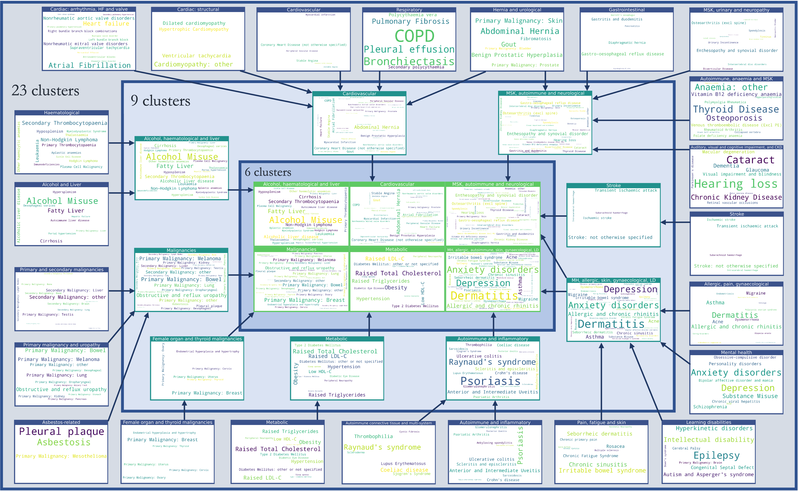

This plot represents the assignment of diseases to clusters. Disease embeddings were created using MCA, retaining 30 dimensions. Clusters were identified using Markov Multiscale Community Detection. Optimal cluster partitions were identified at three resolutions of 23, 9 and 6 clusters.
